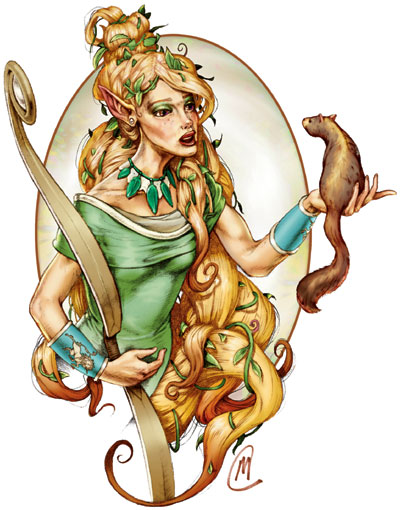

艾罗娜（Ehlonna）

森之艾罗娜，森林女神
中等神力
圣徽：腾跃之独角兽
居住位面：Beastlands
阵营：中立善良
神职：森林，林地，花与动物，生育
信徒：精灵，侏儒，半精灵，半身人，游侠，德鲁伊，猎人，农民，樵夫。
牧师阵营：混乱善良，守序善良，中立善良
领域：动物，善良，植物，太阳
偏好武器：长剑
传说所描述的艾罗娜，一般的形象是一位黑发的人类女子或是一位金发的精灵女性。至于她的穿着，传说就更多了，从耐用的游侠或者护林人的登山服，到精细的精灵公主才会穿的袍子，记录上不胜枚举，不过，不论衣服样式如何，他们总是浅绿色的。艾罗娜关注着所有住在森林之中，热爱森林或者在森林中谋生的善良人。
教义
艾罗娜关注着所有住在森林之中，热爱森林或者在森林中谋生的善良人。她同样也要保护森林本身，从那些毁灭森林和向森林谋取太多的人手里。艾罗娜经常劝戒她的信徒们，要与森林和谐地生活在一起，只从森林中拿走他们需要的东西。艾罗娜所赋予的森林之慷慨，是一种应当被珍惜和感激的恩典，而不是一份可以被掠夺和侵占的宝藏。
神职人员和神殿
艾罗娜的牧师一般选择穿着耐用的墨绿色服装。他们居住在森林之中，并与那里的游侠，德鲁伊，精灵与妖精们保持着友好的关系。他们守卫着森林不被邪恶的古怪民俗，贪得无厌的樵夫和试图毁灭森林以自肥的人所伤害。如果有人试图要从森林中掠劫些什么，牧师们就会先是以礼貌但是坚决态度阻止他们，如果入侵者们坚持，艾罗娜的牧师们可就不会客气了，他们会用一切可能办法赶走入侵者。大多数的艾罗娜的牧师平日坚持学习林木方面的知识，或者坚持值树，跟个或者两者都做。
艾罗娜的神殿，只要是在森林中的，一般都是露天的，至多由周围的树木构架起一个屋顶而已。而在森林里的小村庄中，大多能发现供奉着她的小神殿。
艾罗娜
游侠20级/德鲁伊10级/牧师10级
中体形外界生物
神格等级：15
生命骰：20d8+160（外界生物）加20d10+160（游侠）加10d8+80（德鲁伊）加10d8+80（牧师）（1000hp）
先攻调整值：+16
速度：60尺
防御等级：78（+16敏捷，+15神格等级，+28天生防御，+9偏转）
攻击加值：+5飞舞护身长剑 +69/+64/+59/+54近战，+5飞舞神圣匕首 +68/+63 近战，或+5力量（+9力量调整）神圣长弓配合 +5箭， +84/+84/+79/+74远程，或法术 +59近战接触或 +65远程接触
伤害加值：+5飞舞护身长剑 1d8+15/17-20，+5飞舞神圣匕首 1d4+10/19-20，或+5力量（+9力量调整）神圣长弓配合 +5箭 1d8+19/19-20/*3；或者使用法术
占据/威胁范围：5尺*5尺/5尺
特殊攻击：每日12次驱散不死生物，领域神力，超凡神圣能力，类法术能力
特性：神术免疫，伤害减免 50/+4，火系法术抗力 35，神术自发性施法，理解、交谈及阅读所有语言并直接于任何15里内的生命存在交谈，远程沟通，神祗国度，随意无误传送，随意位面旅行，宿敌（地精类生物 +5，龙 +4，巨人 +3，野兽 +2，魔法兽 +1），自然感知，抵抗自然诱惑，昏暗视觉，无踪步，毒性免疫，自然变形（小，中或大体形动物，每日4次），穿林，SR47，神圣光环（1500尺，DC33）
豁免调整值：坚韧 +55，反射 +63，意志 +77
能力值：力量 31，敏捷 42，体质 27，智力 26，感知 29，魅力 29
技能：动物理解 +67，唬骗 +42，专注 +56，手艺（制弓） +48，手艺（木工） +48，交涉 +56，训练动物 +64，医疗 +64，躲藏 +69，知识（奥术） +33，知识（自然） +76，知识（宗教） +33，聆听 +64，潜行 +69，专业（草药） +82，骑术（马） +55，探知 +46，搜索 +61，察言观色 +61，辩识法术 +56，侦察 +64，游泳 +35，野外知识 +73。技能检定掷骰自然结果总是取20
专长：警觉，格斗施法，格斗反射，闪避，远距射击，精通重击（复合长弓），精通重击（长剑），精通先攻，精通双武器攻击，机动，近距射击，精确射击，即时备战，法术瞬发，速射，移动射击，跳跃攻击，法术定发，追踪，武器专攻（复合长弓），武器专攻（长剑）
神圣免疫：属性伤害，属性吸取，酸，冷，即死效果，疾病，瓦解，电，能量吸取，心智影响效果，麻痹，毒，睡眠，震慑，变形，监禁，放逐。
超凡神圣能力：改变现实，区域神力护盾，天神下凡，召唤生物（动物），召唤生物（独角兽），操控生物（仙），制造高级物品，制造物品，神力箭术，神力风暴，神力游侠能力，神力护盾，神力武器专攻（复合长弓），额外领域（太阳），生命礼物，种植生物（动物），集体神力风暴，野兽灵智
领域神力：每日15次使用动物伙伴能力；施放善良类法术时，施法者等级+1；每日15次斥责或命令植物；每日15次强力驱散
类法术能力：艾罗娜安可以相当于施法者等级为26级使用善良类法术能力，以相当于施法者等级为25使用其他类法术能力。类法术能力的基本豁免DC为34+法术等级。Calm animals,hold animal,dominate animal,repel vermin,commune with nature,antilife shell,animal shapes,creeping doom,shapechange,protection from evil,aid magic circle against evil,holy smite,dispel evil,blade barrier,holy word,holy aura,summon monsterIX（仅限以善良类法术施展），entagle,barkskin,plant gorwth,control plants,wall of thorns,repel wood,changestaff,command plants,shambler,endure elements,heal metal,searing light,fire shield,flame strike,fire seeds,sunbeam,sunburst,prismatic sphere
每日牧师神术：6/8/8/6/6/5；基础DC=19+法术等级
每日德鲁伊神术：6/7/6/5/5/4；基础DC=19+法术等级
每日游侠神术：6/5/5/5；基础DC=1+法术等级
财产：艾罗娜的偏好武器为“耶娜维尔”，一把又白木制成的 +5力量（+9力量调整）神圣长弓。其制造施法者等级为20，重3磅
其他神圣能力
作为一个中等神力，艾罗娜在任何掷骰中自动取最高值，当攻击或豁免检定掷骰自然出1时，不被视作必然失误，她是不朽的。
感知：艾罗娜可以看见（无论通常视觉与昏暗视觉），听见，触摸和嗅到15里的距离。他可以以一个标准动作感知到任何动物，他的信徒，圣迹，与他有关的物体和任何他的名字在一个小时内被说出的地点周围15里内的一切。他能够立即将她的感知延伸到10个地方。他立即能够在2个地方阻止神格等级等于或者小于她的神的感知力量，时间最长可达15个小时。
神职感知：艾罗娜可以感知到尘世间十五周前或十五周后所发生的任何有关森林的安宁与和平的事件。她可以以任何活着的树木作为远程沟通和远程感知的对象。
自动动作：艾罗娜能够以一个自由动作使用任何她的手艺（木工），知识（自然），专业（草药），或者野外知识技能，只要该项任务的DC在25或者更低。每轮她能够完成10个类似的自由动作。
创造魔法物品：艾罗娜可以制造出附带魔法效果的任何轻型和中型盔甲，任何简单武器，以及魔法弓，她还可以创造出任何与木工或是敏捷与灵巧有关的魔法物品，比如精灵斗篷。她所创造出的魔法物品交易价格不能超过200000GP
化身
艾罗娜的化身在外形上如艾罗娜的本体一般，是变化多端的。她派遣她的化身们去监视林地的安全，并去阻止任何试图劫掠或骚扰森林及森林住民的人。
艾罗娜的化身：如同艾罗娜的本体，但以下除外：神格等级为7；防御等级62（接触42，措手不及46）；攻击加值 +61/+56/+51/+46近战（1d8+15/19-20，+5飞舞护身长剑），+60/+55近战（1d4+10/19-20，+5飞舞神圣匕首）；或者 +76/+76/+71/+66/+61远程（1d8+19/*3，+5力量[+9力量调整]神圣复合长弓）或者法术 +51近战接触，+57远程接触；特性，伤害减免 42/+4，火系伤害减免 27，SR38，神圣光环（700尺，DC27））；豁免检定，坚韧 +47，反射 +55，意志 +48；所有技能调整值减8
超凡神圣能力：召唤生物（动物），召唤生物（独角兽），神力箭术，神力游侠能力，神力护盾，神力施法，神力武器专攻（复合长弓），额外领域（太阳），种植生物（动物），野兽心智。
类法术能力：施法者等级为17级，基本豁免DC为26+法术等级。